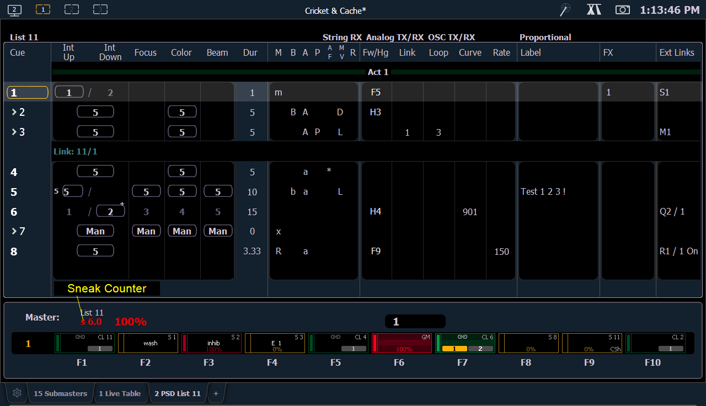

The playback status display (PSD) allows you to view a range of cues in the current cue list, all cue attributes for those cues, and a view of the fader configurations for 10 pages of 10 faders each (for a total of 100 visible faders.
On Element 2, the playback status display (PSD) allows you to view a range of cues in the cue list and all the cue attributes for those cues. Fader information can be viewed in the fader status display .
The PSD opens on Tab 2. This display cannot be closed, but you can have multiple instances of the PSD open on different tabs.
Holding down [Time] (the one by [Data]), while a cue is fading, will display the cue category times counting down in the cue list display area. The default action is to show the total time not the countdown.
To always show the countdown, a {PSD Time Countdown} option is available in PSD configuration menu (see Playback Status Display Configuration ). When the {PSD Time Countdown} is enabled, the cue category times will countdown as a cue is fading. To see the total time, hold down the [Time] key. {PSD Time Countdown} is “disabled” by default.
An optional command line for the playback status display is available. The optional command line must be enabled to use. See Playback Status Display Configuration .
There are three formats for the playback status display on all consoles except Element 2:
By default, it will be an expanded cue list format. When the focus is on the playback status display, press [Format] to toggle between the formats.

On Element 2, the PSD looks like: